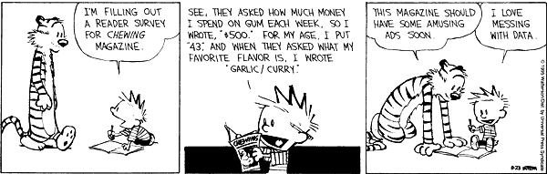

─ Session info ───────────────────────────────────────────────────────────────
setting value
version R version 4.2.1 (2022-06-23 ucrt)
os Windows 10 x64 (build 19045)
system x86_64, mingw32
ui RTerm
language (EN)
collate Portuguese_Brazil.utf8
ctype Portuguese_Brazil.utf8
tz America/Sao_Paulo
date 2023-03-10
pandoc 2.19.2 @ C:/Program Files/RStudio/resources/app/bin/quarto/bin/tools/ (via rmarkdown)
quarto 1.2.335 @ C:\\PROGRA~1\\Quarto\\bin\\quarto.exe
─ Packages ───────────────────────────────────────────────────────────────────
package * version date (UTC) lib source
cli 3.4.1 2022-09-23 [1] CRAN (R 4.2.1)
digest 0.6.29 2021-12-01 [1] CRAN (R 4.2.1)
evaluate 0.17 2022-10-07 [1] CRAN (R 4.2.1)
fastmap 1.1.0 2021-01-25 [1] CRAN (R 4.2.1)
glue 1.6.2 2022-02-24 [1] CRAN (R 4.2.1)
htmltools 0.5.3 2022-07-18 [1] CRAN (R 4.2.1)
htmlwidgets 1.5.4 2021-09-08 [1] CRAN (R 4.2.1)
jsonlite 1.8.4 2022-12-06 [1] CRAN (R 4.2.2)
knitr 1.40 2022-08-24 [1] CRAN (R 4.2.1)
lifecycle 1.0.3 2022-10-07 [1] CRAN (R 4.2.1)
magrittr 2.0.3 2022-03-30 [1] CRAN (R 4.2.1)
rlang 1.0.6 2022-09-24 [1] CRAN (R 4.2.1)
rmarkdown 2.17 2022-10-07 [1] CRAN (R 4.2.1)
rstudioapi 0.14 2022-08-22 [1] CRAN (R 4.2.1)
sessioninfo 1.2.2 2021-12-06 [1] CRAN (R 4.2.1)
stringi 1.7.8 2022-07-11 [1] CRAN (R 4.2.1)
stringr 1.5.0 2022-12-02 [1] CRAN (R 4.2.2)
vctrs 0.5.1 2022-11-16 [1] CRAN (R 4.2.1)
xfun 0.33 2022-09-12 [1] CRAN (R 4.2.1)
yaml 2.3.5 2022-02-21 [1] CRAN (R 4.2.1)
[1] C:/Users/ferna/AppData/Local/R/win-library/4.2
[2] C:/Program Files/R/R-4.2.1/library
──────────────────────────────────────────────────────────────────────────────Diariamente os economistas utilizam uma grande variedade de dados que são de difícil mensuração e que, portanto, são estimados/coletados por terceiros (IBGE, BCB, etc.). A falta de investigação aprofundada sobre como esses dados são produzidos, entendendo seus pontos fortes e suas limitações, pode nos levar a cair em algumas “armadilhas” peculiares.
Apesar de as fontes públicas de dados econômicos e financeiros do Brasil serem aderentes as “boas práticas” de dados do FMI - conforme o site dedicado ao assunto intitulado “Dissemination Standards Bulletin Board (DSBB)” -, o tema de qualidade de dados (macro)econômicos por essas bandas é sempre produtivo. Problemas de consistência, mudança de metodologia, disponibilidade e acesso a bancos de dados são corriqueiros no dia a dia de quem trabalha com esses dados, de modo que, mesmo que se queira fazer uma simples análise, você provavelmente precisará “matar um leão por dia”. Em um contexto mais amplo, frequentemente circulam notícias reportando algum tipo de desvario observado em dados públicos, desde na área da saúde até em dados de programas sociais.
Apesar dos problemas, dados são o sangue que corre na veia de quase todo macroeconomista - eles não sobrevivem sem! - sendo imprescindível conhecer suas nuances. Dessa forma, destacamos abaixo 5 casos das principais armadilhas e nuances dos dados (macro)econômicos brasileiros:
1) Dados simplesmente somem
Talvez a “armadilha” mais gritante seja a situação inesperada de determinado dado, que você habitualmente utiliza, simplesmente… sumir. Nessas circunstâncias, o primeiro palpite razoável que pode surgir é que a pesquisa/variável/etc. pode ter sido descontinuada pela fonte primária. Mas, como é o caso de diversas variáveis, os dados são geralmente mantidos no banco de dados para acesso, mesmo que não haja ingestão de dados novos. Não foi o caso, por exemplo, do que aconteceu alguns meses atrás com as tabelas 6390 e 6392 da PNAD Contínua mensal, disponibilizada no SIDRA/IBGE, das quais as variáveis referentes a massa e rendimento real simplesmente sumiram. Apesar de esses dados já terem sido reestabelecidos, pelo menos até a data de hoje, fica a lição: pode ser útil você ter e manter o seu próprio banco de dados!
2) Dados mudam constantemente
Aquela frase que diz que “no Brasil até o passado é incerto” é tão verdadeira que até mesmo sua autoria é questionável - alguns atribuem a Pedro Malan, outros a Gustavo Loyola. E em se tratando de dados macroeconômicos, essa incerteza é até esperada, pois diversas estatísticas produzidas em um país - como as Contas Nacionais, por exemplo - são revisadas com frequência. Portanto, não se deve assumir que aqueles gráficos e tabelas bonitas vistos por aí continuarão com os mesmos valores históricos para sempre.
Um caso recente dessa armadilha aconteceu com os dados de 2020 do saldo de empregos do CAGED (que já tem histórico de mudanças metodológicas), após uma revisão expressiva. Portanto, se você utiliza com frequência dados passíveis de revisão, o melhor remédio para evitar dor de cabeça é sempre atualizar a série total, não apenas as novas observações mais recentemente divulgadas.
3) Dados são imprecisos
Não podemos também escapar de problemas de acurácia, erros de medida, de registro e de coleta dos dados que, apesar disso, estão diariamente na mídia. Na maioria dos casos, dados que são provenientes de pesquisas (surveys) estão mais propensos a apresentar estas armadilhas, mas não limitado a esse tipo de dado. Por exemplo, você sabia que em diversos meses os pesos dos subitens do IPCA não somam 100%, considerando 4 casas decimais? Ou que no Sistema de Expectativas (Focus) do Banco Central do Brasil estão registradas expectativas em certas datas para variáveis cujo valor real já havia sido divulgado? São casos, no mínimo, curiosos e que passam despercebidos.
No caso dos pesos do IPCA alguém pode argumentar um certo preciosismo ao considerar 4 casas decimais - de fato é - e outrem poderia ponderar que se o dado é divulgado com 4 casas decimais, espera-se que, pela metodologia, feche 100%. Já no caso das expectativas do Focus, preocupa o fato de que dados com tal “sujeira” guiem as decisões do COPOM, afinal o sistema não deveria aceitar ou registrar expectativas para variáveis cujo valor/horizonte de previsão já é sabido.
Sobre imprecisão e qualidade dos dados, aproveito a oportunidade para resgatar a ótima tirinha de Calvin e Haroldo sobre o assunto:

4) Metodologias dos dados mudam
De tempos em tempos as metodologias e definições de dados podem mudar, em alguns casos de maneira programática e em outros inesperadamente. Dependendo da alteração, como no caso recente e famoso do CAGED, pode-se inviabilizar a comparação dos dados pré e pós mudança metodológica. Isso torna obrigatória a leitura das notas de rodapé associadas a divulgação dos dados, além da página de histórico das mudanças da pesquisa na internet, pois tais mudanças e rupturas nas séries afetam a análise dos dados.
Além disso, vale enfatizar que também há problemas quando as metodologias não mudam quando deveriam mudar, ou seja, pesquisas que estão defasadas e precisam de atualização. Isso foi (tem sido) especialmente importante nos tempos recentes de pandemia e seus choques, onde, por exemplo, indicadores que mensuram a inflação no país utilizam estruturas de consumo das famílias de 2017-18, mas isso é outra discussão.
5) Disponibilidade de dados públicos é precária
A questão de infraestrutura para disponibilidade e acesso aos dados econômicos também merece atenção. Dados disponibilizados em formatos arcaicos - como planilhas de Excel com formatação pouco convidativa -, sites instáveis ou que ficam fora do ar, limitações de download/requisição e até mesmo a própria usabilidade dos sites e fontes públicas brasileiras são alguns dos problemas mais frequentes e que ninguém escapa. Apesar de avanços, nos dados macroeconômicos o âmbito fiscal parece ser o mais problemático. Por exemplo, há alguns meses a planilha de resultado primário do Tesouro Nacional ficou indisponível por cerca de 2 semanas.
Por fim, enfatizo que instituições brasileiras como o IBGE cumprem um papel fundamental no país e, atualmente, são respeitadas nacional e internacionalmente pelo seu trabalho. Este texto não visa realizar críticas, mas apenas relata fatos do dia a dia de quem lida com dados (macro)econômicos, acendendo o alerta para os mais iniciantes. Comentários são bem-vindos!